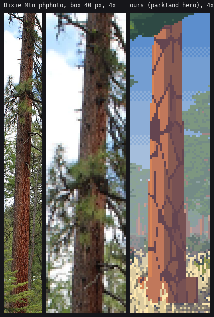
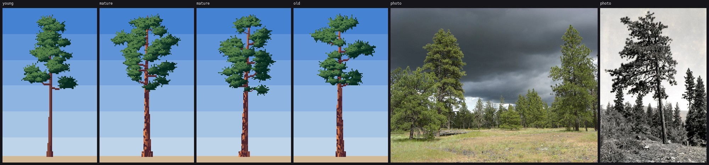
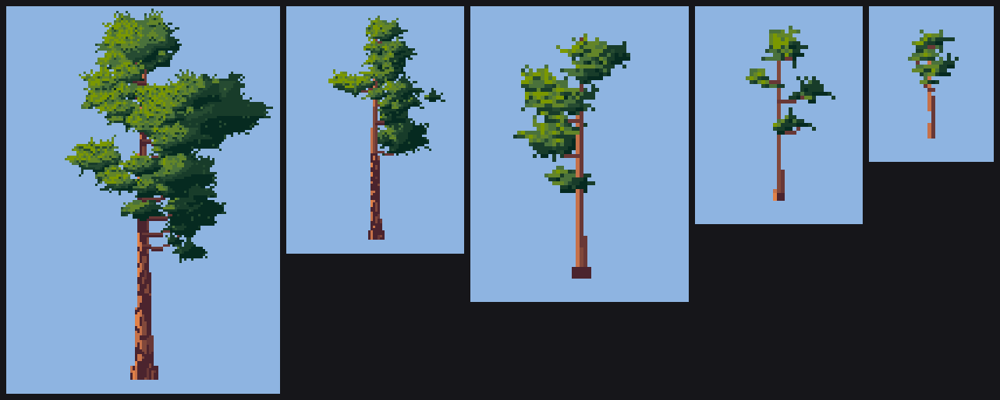
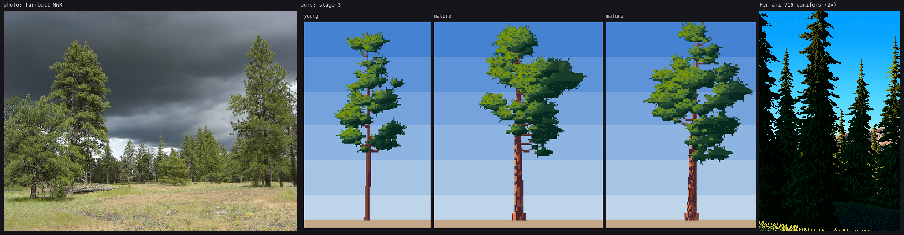

8. Ponderosa pine
The bark is ready. The crown is partial.
From the photos (Turnbull NWR, Dixie Mountain, the 1939 Keen tree-class photos) and the plant desk's guide 09:
- One straight thick trunk, bare for its lower third to half.
- Orange-cinnamon bark in big flat plates split by black furrows (the "jigsaw"). Young trees ("blackjacks") are dark grey-brown.
- An open, clumpy crown: a few big masses held out on near-horizontal limbs that droop and turn up at the ends, with sky and dark limbs showing between.
- Long needles in tufts at the branch ends, lit tufts catching the light like starbursts.
- Old trees go flat-topped.
Bark: a stretched Voronoi

figs.fig_bark: the Dixie Mountain trunk, the same box-downsampled to 40 px, and the near trunk of my parkland hero, 4×.
pine._trunk scatters seed points in the trunk's own coordinates and computes, per pixel, the nearest and second-nearest seed in a space squashed 3:1 vertically. That gives plates taller than wide. Where the two distances are nearly equal, the pixel is on a cell border, and that's a furrow, the darkest step. Plates are shaded across the cylinder, and a third of them get half a step more, so neighbouring plates differ:
plate_w = max(1.6, wb * 0.45)
npts = int((gy - top_y) * wb * 4 / (plate_w * plate_w * 3) + 20)
sx = rng.uniform(-wb, wb, npts)
sy = rng.uniform(top_y, gy + 2, npts)
...
u = (x + 0.5 - xc) / max(half, 0.5)
nz = np.sqrt(max(0.0, 1 - min(1, u * u)))
lit = max(0.0, u * L[0] + nz * L[2] * 0.8 + 0.1)
base = 1 + 2.6 * lit
if half >= 1.5 and not young:
dxs = (x - xc) - sx
dys = (y - sy) / 3.0
d = dxs * dxs + dys * dys
a, b = np.partition(d, 1)[:2]
furrow = (np.sqrt(b) - np.sqrt(a)) < 0.55
if furrow:
s = 0
else:
s = int(np.clip(round(base + (0.5 if (np.argmin(d) % 3 == 0) else 0)), 1, 4))
Young trees skip the plates and cap at step 2, which makes the dark blackjack bark. The BARK ramp's albedo is (196, 112, 62) with a strong shadow shift toward violet-brown.
The downsampled photo shows what I exaggerated. At 40 px the real plates are finer and more flecked, and the furrows are thin dark streaks. Mine are bold polygons. That was a choice, because the jigsaw is the recognition key and Ferrari exaggerates the telling feature. I'd still thin the furrows by half at this size and let the plates break into flecks near the edges of the trunk.
At 7 px wide or less (the trunk of a 150-px tree) the plates don't fit and the trunk is just orange with a few dark flecks. That's right, but the bark only sings on near trees.
The crown: what I tried
 a: a coat rack. A few pads on bare limbs.
a: a coat rack. A few pads on bare limbs.

b: fill pads added around the limbs. Now it's topiary, evenly stacked. d: broader, more tufts, lit needles shifted yellow-green. Smooth blobs.
d: broader, more tufts, lit needles shifted yellow-green. Smooth blobs.
 f (kept): fewer, smaller fill pads with log-normal sizes, leaving sky holes.
f (kept): fewer, smaller fill pads with log-normal sizes, leaving sky holes.
What stayed in pine.paint_pine:
- Limbs: near-horizontal clean-run arcs that droop in the middle and turn up at the tips, on random sides, with a depth each.
- Pads at the limb ends and along their outer halves. Then fill pads clustered around the limbs, with log-normal sizes (
rpad * rng.lognormal(-0.1, 0.3)), so the crown is a few big masses and many small ones, not an even stack. - A pad field like the sage's: each pad's normal is biased upward (pads are flat on top) and blended with the crown's big form, with a dark underside and a darker cast for far-side pads. It's quantized to three calm base values. A 1-px dark seam goes where a nearer pad overlaps a farther one (the owner map changes).
- Starburst tufts: small crosses of the two lit steps whose density follows the light, with a dark tuck under each.
- Bristles: 1-to-2-px needles radiating from the pad rims, few on the undersides.
- Small trees (under ~90 px) get relatively bigger masses and fill the crown envelope directly. Otherwise, with too few limbs to carry the mass, they turn back into coat racks:

Before: mature pines at 150, 90, 60, 40 and 24 px. Below 60 px they're coat racks.

After, with the envelope fill for small trees (down to 14 px).
Where it falls short

Turnbull NWR | my stage-3 pines | Ferrari's V16 conifers.
- The crown's clumps are too even. Turnbull's trees have two or three huge masses and a ragged sky-shot top. Mine have ten similar pads.
- Mid-distance pines are a row of lollipops (the parkland hero's background). At 20–40 px every tree has the same round head on the same bare stick.
- Ferrari's conifers are a dark mass with few, bright lit dabs. I spread the lit tufts too evenly, so the crown reads mid-green all over. The fix is the same as the sage's grouping: decide lit or shadowed per tuft cluster, not per pixel.
- The near crown in the parkland hero is a flat pad without bristle at that size (the critic, round 6).